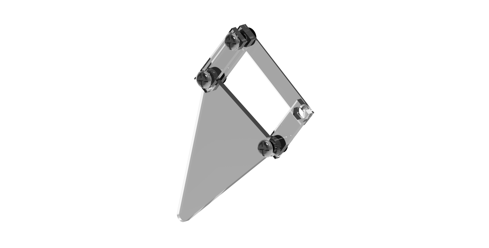
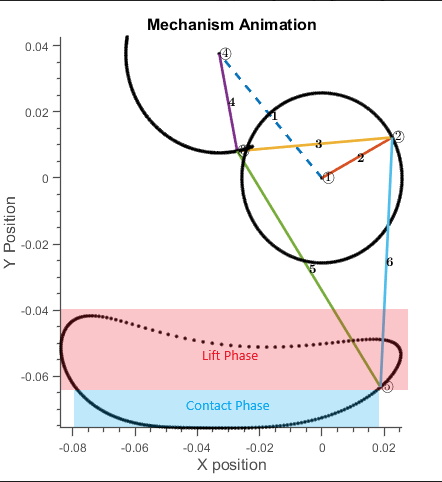
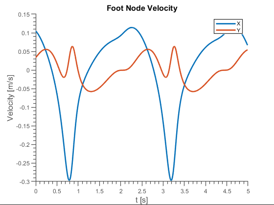
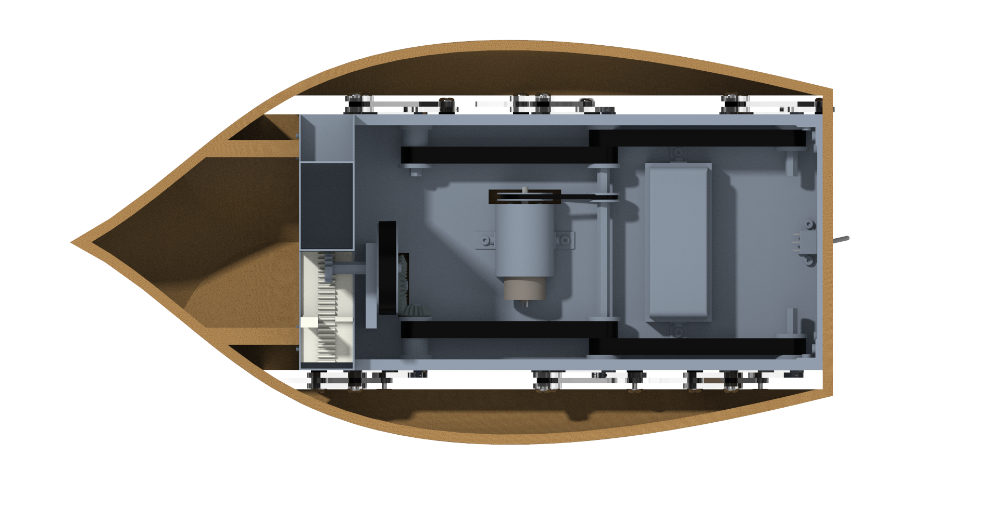

Hexapod Walker
This hexapod walker was designed for my ME370 final project. The goal was to create a walker that would be able to move down a hallway and dispense candies at a set interval. Sadly, the design was not able to be constructed because of lack of access to facilities due to the COVID-19 pandemic.
The Challenge
We had to develop a system powered by only a singular motor rotating at a constant speed that would both be able to walk down a dorm hallway at a required speed and dispense candies into dorm room doors at a set interval. This required us to design a drivetrain that would also be able to deliver power to the candy launching mechanism.
Leg Linkage Design
Each leg is a 4-bar linkage where link lengths were calculated to achieve a 0.5 duty cycle and a 0.1 m/s robot travel speed.

Linkage Calculations and Analysis
PVA (position, velocity, acceleration) analysis using a MATLAB script to plot the theoretical motion of the mechanism and calculate velocity. In addition, calculations were done based on the total weight of the walker to make sure that we were generating the required torque to propel it forward.


Drivetrain Design
The entire robot is powered by a single 12V DC motor reduced by a planetary gearbox and a belt to the main driveshaft (part of the design constraints). A belt drive system distributes power to each individual leg. Belts were chosen as the alternative to gears or chain to keep costs and weight low. A bevel gear and pulley system transfers power to the spring-loaded snack delivery mechanism.
